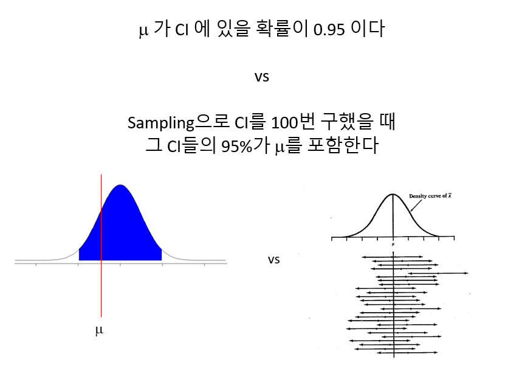

Chapter 8 Statistical inference
8.1 Introduction
통계적 추정이란 모집단으로부터 임의 추출된 표본을 이용하여 모집단을 추정하는 과정을 의미합니다. 앞에서 배운들 중 다음 중요한 키워드들이 있습니다. 복습하는 의미에서 각 키워드들의 의미를 다시 한 번 익혀두시기 바랍니다.
- 모집단 (population) - 전체 대상
- 모수 (Parameter) - 모집단의 분포를 설명하는 대푯값
- 표본 (sample) - 모집단으로부터 임의 추출된 관측값의 모음
- 통계량 (statistics) - 표본의 평균, 분산과 같은 대푯값으로 표본의 특징을 수치화한 값
- 확률변수 (random variable) - 확률적으로 따라 값이 결정되는 변수
- 확률분포 및 확률 질량/밀도 함수
- 표본분포 (sampling distribution) - 통계량의 분포
다음은 표준정규분포 모집단에서 (모수: \(\mu=0, \sigma=1\)) 16개 표본을 임의 추출하여 평균을 (통계량) \(\bar{x}\) 구하고 이 과정을 10번 반복한 상황을 표현한 그림으로 통계적 추론의 과정을 보여 줍니다. 즉, 표본을 뽑고 그 평균을 (표본평균) 구하는 과정을 반복할 경우 표본평균의 평균이 모평균에 수렴하고 표본평균의 분산이 표본들의 분산보다 더 작다는 것을 보여줍니다.

UsingR for introductory statistics, 243 페이지, 동그라미: 표본 \(x\), 사각형: 표본평균 \(\bar{x}\), 점선:모평균 (\(\mu\)), 하단 밀도 그래프: 표본평균의 분포
- 어떤 임의 표본에 대해서 \(\bar{x}\)의 표본분포는 \(\mu\) 근처에 위치
- 어떤 임의 표본에 대해서 \(\bar{x}\)의 표본분포의 표준편차는 \(\sigma/\sqrt{n}\) 로 표현 (\(\sigma\)는 모분산, 표본들의 분산보다 작음)
- 모분포가 정규분포이면 \(\bar{x}\)도 정규분포임
8.2 Simulation
이번 장에서는 시뮬레이션을 통해 추정의 개념을 이해하는 것을 목적으로 합니다. 확률과 공식의 유도를 통한 추정과정의 이해도 중요하지만 컴퓨팅 기반의 시뮬레이션도 통계적 추정의 개념을 이해하는데 큰 도움이 될 수 있습니다. R에서 분포관련한 시뮬레이션은 앞서 소개한 d, r, p, q 함수를 이용할 수 있습니다.
[EXERCISE] \(N(0, 1)\)의 분포를 dnorm()을 이용해 그리시오 (\(-4 \le x \le 4\))
library(tidyverse)
x <- seq(-4, 4, by=0.01)
y <- dnorm(x, 0, 1)
dat <- data.frame(x, y)
ggplot(dat, aes(x, y)) +
geom_line()지수분포의 경우, 파라미터 (\(\lambda\)) 값에 따른 그래프 변화
x <- seq(0, 4, by=0.01)
y1 <- dexp(x, 1)
y2 <- dexp(x, 2)
y3 <- dexp(x, 3)
dat <- data.frame(x, y1, y2, y3)
datlong <- dat %>% pivot_longer(cols=c(y1, y2, y3))
ggplot(datlong, aes(x=x, y=value, col=name)) +
geom_line(size=2)아래 예제는 본 장의 처음 그림을 구현하는 코드 입니다. 각자 실행해 보시고 통계적 추론의 개념과 함께 그래프를 그리는 ggplot 코드도 익혀보시기 바랍니다.
[EXERCISE] 표준정규분포로부터 16개의 표본을 뽑아 평균을 구하고 각 표본과 평균 값들을 \(y=1\) 위치에 점으로 표현하시오 (rnorm()사용)
nsample <- 16
x <- rnorm(nsample, 0, 1)
y <- rep(1, nsample)
xbar <- mean(x)
dat <- data.frame(x, y)
ggplot(dat, aes(x, y)) +
geom_point() +
geom_point(aes(x=mean(x), y=1), colour="blue", size=5, shape=15)[EXERCISE] 위 예제와 같이 표준정규분포로부터 16개의 표본을 뽑아 평균을 구하는 과정을 두 번 반복하되 두 번째 데이터는 \(y=0.9\) 위치에 표현하시오
nsample <- 16
x <- rnorm(nsample*2, 0, 1)
y <- c(rep(1, nsample), rep(0.9, nsample))
g <- factor(c(rep(1, nsample), rep(2, nsample)))
dat <- data.frame(x, y, g)
ggplot(dat, aes(x, y)) +
geom_point() +
geom_point(aes(x=mean(x[1:nsample]), y=1), colour="blue", size=5, shape=15) +
geom_point(aes(x=mean(x[(nsample+1):length(x)]), y=0.9), colour="blue", size=5, shape=15) +
scale_y_continuous(limits=c(0, 1.2))[EXERCISE] 위 예제를 10번 반복하되 각 반복 데이터는 각각 \(y=1, 0.9, 0.8, ..., 0.1\) 위치에 그리시오
nsample <- 16
nrep <- 10
x <- rnorm(nsample*nrep, 0, 1)
tmpy <- seq(0.1, 1, length.out=nrep)
y <- rep(tmpy, each=nsample)
## ?rep
g <- factor(y)
dat <- data.frame(x, y, g)
head(dat)
## sample means
dat_mean <- dat %>%
group_by(g) %>%
summarise(mean=mean(x))
head(dat_mean)
ggplot() +
geom_point(data=dat, aes(x, y)) +
geom_point(data=dat_mean,
aes(x=mean, y=as.numeric(as.character(g))),
colour="blue",
size=5,
shape=15) +
theme_bw()[EXERCISE] 위 예제에서 사용된 샘플들의 정규분포 곡선과 \(\bar{x}\)의 분포를 같이 그리시오 (\(-4 \le x \le 4\), 앞서 예제의 dat와 dat_mean 사용)
head(dat)
head(dat_mean)
x <- seq(-4, 4, by=0.01)
# distribution of the samples
y <- dnorm(x, mean(dat$x), sd(dat$x))
# distribution of the sample means
y2 <- dnorm(x, mean(dat_mean$mean), sd(dat_mean$mean))
dat2 <- data.frame(x, y, y2)
dat2_long <- dat2 %>%
pivot_longer(cols=c(y, y2))
head(dat2_long)
ggplot(dat2_long, aes(x=x, y=value, color=name)) +
geom_line(size=1.2) +
labs(y="Density") +
theme_bw() +
scale_color_manual(name="Type",
labels=c("Samples", "Sample Means"),
values=c("red", "blue"))위와 같이 표본들의 분포보다 표본평균들의 분포가 분포가 더 중심에 가깝다는 것을 볼 수 있습니다.
8.3 z-statistics with simulation
정규분포에서 추출된 표본들의 평균(표본평균)은 \(n\)의 수가 많지 않더라도 정규분포를 따릅니다 (\(n\)이 충분히 많은 경우, 중심극한정리에 의해서 모집단의 분포와 상관없이 표본평균의 분포는 정규분포 입니다). 통계적 유의성 판단의 기본 룰은 특정 확률변수 \(X\)의 분포를 가정한 후에 특정 사건의 관측한 값이 \(X\)의 확률분포 어디에 위치하는지 찾고 확률을 계산하여 해당 사건이 일어날만한 일이였으면 가정이 맞는 것으로 사건이 일어날 확률이 적게 나오면 가정이 틀린 것으로 판단하는 것입니다.
유사한 방법으로 모집단이 정규분포로 알려진 표본들을 가지고 표본평균을 구했을때 이 표본평균이 정규분포에서 어디에 위치하는지와 그 확률을 계산하여 관측한 표본평균의 유의성을 판단할 수 있습니다. 이 과정에 사용하는 통계량이 z-score (z값) 입니다. 관측값을 z-score로 변환해줄 경우 표준정규분포 (\(N(0, 1)\))로부터 확률을 쉽게 계산할 수 있습니다.
\[ z= \frac{\bar{x} - \mu}{(\sigma/\sqrt{n})} \]
앞서 Univariate, Bivariate 학습에서 배웠던 Z-score는 표본에 대한 통계량으로 표준편차로 나누어준것과 달리 아래 z-score는 표본평균에 대한 z-score로서 모평균을 빼주고 모분산/\(\sqrt{n}\) 값을 사용한 점이 다릅니다.
[EXERCISE] A 제과 업체에는 그들이 생산하는 사탕의 평균 무게가 평균 100g이고 표준편차가 16인 정규분포를 따른다고 주장한다. 그런데 소비자들은 이 사탕의 평균 무게가 100g보다 낮다고 의심을 하고 표본 10개를 추출하고 평균을 구했더니 90g이 관측되었다. z-score를 계산하고 표준정규분포에서 위치를 표시하시오.
zstat <- function(x, mu, sigma){
z <- (mean(x)-mu)/(sigma/sqrt(length(x)))
return(z)
}
xobs <- c(90, 75, 89, 103, 95, 110, 73, 93, 92, 80)
z <- zstat(xobs, 100, 16)
x <- seq(-5, 5, length.out=100)
y <- dnorm(x, 0, 1)
# distribution of the sample means
dat <- data.frame(x, y)
p <- ggplot(dat, aes(x=x, y=y)) +
geom_area(data=filter(dat, x < z), fill="red") +
geom_line(size=1.2) +
labs(y="Density") +
theme_bw() +
geom_segment(aes(x=-1, xend=z, y=0.05, yend=0),
arrow = arrow(length = unit(0.1, "inches")),
size=1) +
annotate("text", label=round(z,2), x=-0.7, y=0.07)
p정규분포에서 관측값보다 더 작은 값이 관측될 확률 (\(p(\bar{X} < 90)=p(Z<-1.98)\))은 pnorm 함수를 사용해서 구할 수 있으며 시뮬레이션을 이용할 수도 있습니다.
p + geom_segment(aes(x=-2.2, xend=-2.2, y=0.1, yend=0.01),
arrow = arrow(length = unit(0.1, "inches")),
size=1) +
annotate("text", label=round(pnorm(z, 0, 1),3), x=-2.2, y=0.12)
## simulation
n <- 1000
x <- rnorm(n, 0, 1)
sum(x < z)/n이제 \(p(X<90)=0.024\) 값의 의미를 생각해 봅니다. 이 확률은 회사측이 주장하는 \(\mu\) = 100 이라는 가설을 전재로 합니다. 즉, \(p(X<90|\mu=100)=0.024\) 입니다. 이는 X < 90 라는 사건이 굉장히 낮은 확률로 일어났다고도 볼 수 있으나 가설이 틀렸다고 보는 것이 합리적입니다. 따라서 회사측이 주장하는 사탕 평균 무게 100g의 주장을 기각하며 소비자측의 주장 \(\mu < 100\) 즉 사탕이 100g 보다 작다는 주장을 강하게 지지하는 결과 입니다.
8.4 t-statistics
위와 같은 z-score를 계산하기 위해서는 모표준편차가 필요하지만 모분산은 일반적으로 알려져있지 않기 때문에 z-score를 사용한 검정의 활용은 한정적 입니다. 모표준편차 대신 표본의 표준편차를 사용하는 통계량이 t-statistic 입니다. t 통계량은 t분포를 가지며 t분포는 \(n\) 이 무한에 가까워지면 표준정규분포와 같아집니다. 표본의 표준편차가 모표준편차보다 작은 경우 t 통계량 값이 z 값보다 커지게 되어 분포 양측 tail쪽 값이 많아지고 더 두꺼운 tail 분포 모양을 가지게 됩니다.
\[ t = \frac{\bar{x} - \mu}{(s/\sqrt{n})} \]
시뮬레이션을 통해 분포를 그려보겠습니다. \(N(0,1)\) 분포에서 랜덤하게 \(n\)={4, 10, 20, 50, 100, 1000} 개의 표본을 뽑는 과정을 1000회 반복한 후 boxplot을 그려보겠습니다.
tstat <- function(x, mu){
(mean(x)-mu)/(sd(x)/sqrt(length(x)))
}
mu <- 0
sigma <- 1
M <- 1000
n <- c(4, 10, 20, 50, 100, 1000)
tstat_array <- replicate(M,
sapply(n, function(x){
tstat(rnorm(x, mu, sigma), mu)
}))
dim(tstat_array)
## transposition
tstat_array <- t(tstat_array)
dim(tstat_array)
colnames(tstat_array) <- as.character(n)
boxplot(tstat_array)
tstat_df_long <- as.data.frame(tstat_array) %>%
pivot_longer(cols=everything())
ggplot(tstat_df_long, aes(x=name, y=value)) +
geom_boxplot()
tstat_df_long <- as.data.frame(tstat_array) %>%
pivot_longer(cols=everything()) %>%
mutate(name=fct_relevel(name, "4", "10", "20", "50", "100", "1000"))
ggplot(tstat_df_long, aes(x=name, y=value)) +
geom_boxplot()8.5 Two sample significance tests
두 그룹의 데이터 (표본)을 가지고 있을 때 두 그룹이 통계적으로 차이가 있는지를 검증하는 방법으로 (코흐트 데이터, Case-control 데이터) 시뮬레이션에 의한 방법을 먼저 소개하고 다음 장에서 확률 분포를 이용한 통계적 검증을 알아보겠습니다.
카페인(커피)이 초초한 상태를 유발하는가? 라는 질문에 답하기 위해서 다음 데이터를 얻었습니다. 다음 값들은 커피를 제공한 그룹과 그렇지 않은 그룹의 손가락 탭핑 횟수를 비디오로 분석한 데이터 입니다. 이럴 경우 일반적으로 두 그룹의 평균의 차이를 비교합니다.
coff <- c(245, 246, 246, 248, 248, 248, 250, 250, 250, 252)
nocoff <- c(242, 242, 242, 244, 244, 245, 246, 247, 248, 248)
obsdiff <- mean(coff) - mean(nocoff)
obsdiff차이는 3.5가 나왔지만 이 차이가 얼마나 통계적으로 유의한지를 알아야 합니다. 시뮬레이션에 의한 방법은 위 두 그룹의 데이터들을 랜덤으로 섞은 후 다시 두 그룹으로 나누어 차이를 계산하고 이 과정을 반복해서 분포를 그린 후 유의성을 계산하는 과정입니다.
[EXERCISE] 두 그룹 데이터에서 임으로 10명을 두 번 뽑아 그 평균의 차이를 계산하시오
caf <- c(245, 246, 246, 248, 248, 248, 250, 250, 250, 252)
no_caf <- c(242, 242, 242, 244, 244, 245, 246, 247, 248, 248)
dat <- c(caf, no_caf)
obs <- mean(caf) - mean(no_caf)
x <- sample(dat, 10, replace=T)
y <- sample(dat, 10, replace=T)
mean(x) - mean(y)[EXERCISE] 위 예제의 과정을 1000번 반복하고 계산된 차이값들로 분포를 그리시오(for 문 이용)
diff_vals <- rep(0, 1000)
for(i in 1:1000){
x <- sample(dat, 10, replace=T)
y <- sample(dat, 10, replace=T)
diff_vals[i] <- mean(x) - mean(y)
}
ggplot(data.frame(diff_vals), aes(x=diff_vals)) +
geom_histogram()[EXERCISE] 분포에서 실제 관측한 3.5 값의 위치를 표시하고 관측값보다 더 극단적인 경우가 나올 경우의 비율을 계산하시오 (위 예제 코드의 연속)
emp_pval <- sum(diff_vals > obs)/length(diff_vals)
textstring <- paste("p(X > ", obs, ") = ", emp_pval, sep="")
ggplot(data.frame(diff_vals), aes(x=diff_vals)) +
geom_histogram() +
geom_segment(aes(x = obs,
y = 30,
xend = obs,
yend = 5),
arrow = arrow(),
size=2) +
annotate("text",
label = obs,
x = obs,
y = 35,
size = 5) +
annotate("text",
label = textstring,
x = 2.5,
y = 100,
size = 5) +
labs(x="X", y="Count")관측된 차이 3.5는 가능한 차이값들을 모두 그려본 분포에서 가장자리에 위치합니다. 관측값이 중심에 가까울수록 흔하게 관측되는 것으로 두 그룹간 차이가 랜덤하게 나누어도 높은 확률로 관측 가능한 값이라는 의미입니다. 반면 가장자리에 위치할수록 그룹간의 차이가 랜덤이 아닌 특정 요인이 작용해서 발생한 사건으로 해석할 수 있습니다.
\(p(X>3.5)\)는 위 사건이 발생한 경우(3.5)보다 극단적으로 큰 값의 사건이 발생할 확률을 말하며 이는 \(1-p(X \le 3.5)\) 이며 \(p(X \le 3.5)\)는 누적분포함수, qnorm으로 구할 수 있습니다. 예제에서는 이 값이 0.003으로 관측값 3.5는 랜덤으로는 거의 일어나기 힘든 확률의 사건임을 알 수 있습니다.
통계적 유의성 검정의 측면에서 생각해 보면 위 두 그룹의 데이터를 랜덤하게 섞은 후 그룹을 다시 나누는 것은 그룹간 차이가 없다는 것을 가정하는 것 입니다. 즉, \(\mu_1 = \mu_2\) 이며 이 상태에서 \(X=\mu_1 - \mu_2\) 인 확률변수라 할 때 \(p(X > 3.5)\), 즉, \(p(\mu_1 - \mu_2 > 3.5 | \mu_1 = \mu_2)\)를 계산 한 값입니다. 이 값이 0.001 이라는 것은 희박한 확률로 3.5가 관측되었다고 볼 수 있으나 가정이 틀렸다고 보는 것이 더욱 합리적 입니다. 따라서 \(\mu_1 = \mu_2\)를 받아들이지 않고 (기각하고) \(\mu_1 \ne \mu_2\)를 지지하는 확률이 높아지게 되는 것 입니다.
8.6 Estimation and confidence interval
앞서 예제에서 두 그룹간 평균의 차이를 통계량 (statistic) 으로 볼 수 있습니다. 통계량은 표본의 특징을 모사하는 값으로 앞서 배운 대푯값들도 통계량으로 볼 수 있고 이들은 모수 (parameter)를 추정하기 위한 값입니다. 이 값이 얼마나 모수와 가까운지, 즉 차이가 0에 가까운지 판단하는 것은 통계적 추정에서 가장 중요한 부분 중 하나 입니다. 일반적으로 \(\mu, \sigma\) 등 모수는 \(\theta\)로 표현하고 \(\theta\)를 추정하기위한 통계량은 \(\hat{\theta}\)로 표현합니다. 다음 식으로 우리가 계산한 통계량이 얼마나 모수에 가까운지는 다음 식으로 알 수 있습니다.
\[ E((\hat{\theta} - \theta)^2) = VAR(\hat{\theta}) + (E(\hat{\theta}-\theta))^2 = \text{variance} + \text{bias}^2 \] 우리가 언급하는 통계량들은 대부분 unbiased 입니다. 불편추정량 (unbiased estimator)이라 부르며 다음과 같은 것들이 있습니다.
- \(E(\bar{x}) = \mu\)
- \(E(\bar{p}) = p\)
- \(E(s^2) = \sigma^2\)
예를 들어 A poll asking a random sample of 1003 whether marriages between same-sex couples should be recognized by law as valid. 55% said yes, 이 경우 A randomly selected person would responding yes with \(\hat{p}\) = 0.55 입니다.
여기서 이러한 투표를 100번 반복 했을 때 계산되는 찬성 비율 값들이 대부분 (또는 95%는) 어디에 모여 있는가? 라는 질문을 할 수 있고 이는 모집단에서의 찬성 비율 (모수, 진짜) 값의 95% 신뢰구간은 무엇인가? 라는 질문과 같습니다.
개념 설명을 위해 다음 t 통계량 시뮬레이션을 수행해 보겠습니다.
tstat <- function(x, mu){
SE <- sd(x)/sqrt(length(x))
(mean(x)-mu)/SE
}
mu <- 0
sigma <- 1
M <- 1000
n <- 4
tstats <- replicate(M, tstat(rnorm(x, mu, sigma), mu))
ggplot(data.frame(x=tstats), aes(x=x)) +
geom_histogram()
quantile(tstats, c(0.025, 0.975))앞 뒤 0.025%를 제외한 구간은 위와 같으며 이는 아래와 같이 표현됩니다. \[ -1.97 < \frac{\bar{x}-\mu}{SE} < 2.033 \] 이를 다시 정리하면 다음과 같습니다.
\[ \bar{x} - 2.033 \cdot SE < \mu < \bar{x}+1.97\cdot SE \] 즉, 위 구간이 1000번 반복해서 표본평균을 구할 경우 위 구간이 95% 데이터들이 모여있는 구간이 되며 모평균 \(\mu\)의 95% 신뢰구간이라고 합니다. 보통 신뢰구간의 해석은 다음과 같습니다.

8.7 Bootstrap
특정 확률변수의 분포를 모를 경우 분포를 생성하는 시뮬레이션 방법으로 적당한 수의 샘플이 있을 경우에 가능한 방법입니다. UsingR 패키지의 Medicare 데이터셋을 예로 들면, 병원비 청구 금액과 지불금액의 차이가 큰 범위의 분포를 가지고 있는 상황이며 이 데이터의 모평균에 대한 신뢰구간을 구하는 문제입니다.
library(UsingR)
str(Medicare)
gapdata <- Medicare %>%
filter(DRG.Definition=="638 - DIABETES W CC") %>%
mutate(gap=Average.Covered.Charges-Average.Total.Payments) %>%
dplyr::select(Provider.Id, gap)
gapdata
str(gapdata)
ggplot(gapdata, aes(x=gap)) + geom_histogram(bins=30)단순히 생각하면 위 데이터의 평균값 mean(gapdata$gap)을 계산하여 모평균을 유추할 수도 있습니다. 그러나 그렇게 분석할 경우 추정된 값이 얼마나 통계적으로 유의한지 알 수 없게 됩니다. 따라서 아래와 같이 boostrap 방법을 사용하여 분포를 생성할 수 있고 이를 이용하여 신뢰구간을 구하고 모평균에 대한 해석을 수행할 수 있습니다.
M <- 2000
xbar <- mean(gapdata$gap)
res <- replicate(M, {
xstar <- sample(gapdata$gap, length(gapdata$gap), replace=T)
mean(xstar) - xbar
})
conf95 <- quantile(res, c(0.025, 0.975))
ggplot(data.frame(res), aes(x=res)) +
geom_histogram(bins=30) +
geom_vline(xintercept=conf95, linetype="dashed", color='blue', size=1.2) +
geom_label(aes(x=conf95[1], y=400, label=round(conf95[1]))) +
geom_label(aes(x=conf95[2], y=400, label=round(conf95[2])))
xbar + conf95따라서 해석은 병원비 청구금액과 지불금액의 차이에 대한 모평균의 95% 신뢰구간은 (13097.79, 18068.15)이며 이는 반복해서 100번의 신뢰구간을 구했을 때 95개의 신뢰구간이 모평균을 포함할 수 있는 구간이다 라고 해석할 수 있습니다.
8.8 Problem 08
datasets 패키지의 co2 데이터셋은 1959년부터 1997년 사이 측정된 공기중 이산화탄소의 농도이다. 연구자들은 1997년이 1959년보다 더 많은 CO2가 방출되고 있다고 주장하고 있다. 이들의 주장을 통계적으로 검증하기 위해서 데이터를 두 그룹으로 나누고 두 그룹간의 차이가 유의한지 시뮬레이션에 의한 방법으로 알아보고자 한다. 통계적 검증은 1997년과 1959년 CO2 방출량이 같다라는 가정을 하고 평균의 차이값에 대한 분포에서의 확률을 구한 후 확률이 낮으면 같다라는 가정이 틀린 것으로 확률이 높으면 가정이 맞는 것으로 한다.
- 1959년 데이터들을 co2a 변수에 저장하고 1997년 데이터들을 co2b 변수에 저장하시오
두 그룹간 평균의 차이값을 obsdiff 변수에 저장하시오 (co2a - co2b)
두 그룹을 하나의 데이터셋으로 만들고 이 데이터셋에서 임의로 12개씩 샘플을 두 번 뽑아 평균의 차이를 계산하시오 (복원추출)
위 3)을 1000번 반복하고 각 계산된 값을 diff_vals 라는 변수에 저장하고 ggplot을 이용해서 히스토그램을 그리시오
diff_vals 값들 중 obsdiff 보다 큰 값들의 비율 emp_pval을 구하시오
emp_pval 값의 의미를 해석하고 문제에서 설정한 가정의 맞고 틀림에 대한 결론을 내리시오

이 저작물은 크리에이티브 커먼즈 저작자표시-비영리-변경금지 4.0 국제 라이선스에 따라 이용할 수 있습니다.